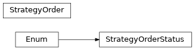

pyokx.okx_market_maker.strategy.model.StrategyOrder
- class pyokx.okx_market_maker.strategy.model.StrategyOrder.StrategyOrder(inst_id: str, side: pyokx.okx_market_maker.utils.OkxEnum.OrderSide, ord_type: pyokx.okx_market_maker.utils.OkxEnum.OrderType, size: str, price: str = '', client_order_id: str = '', order_id: str = '', strategy_order_status: pyokx.okx_market_maker.strategy.model.StrategyOrder.StrategyOrderStatus = <StrategyOrderStatus.SENT: 'sent'>, tgt_ccy: str = '', amend_req_id: str = '', filled_size: str = '0', avg_fill_price: float = 0)[source]
Bases:
object- amend_req_id: str = ''
- avg_fill_price: float = 0
- client_order_id: str = ''
- filled_size: str = '0'
- inst_id: str
- order_id: str = ''
- price: str = ''
- size: str
- strategy_order_status: StrategyOrderStatus = 'sent'
- tgt_ccy: str = ''
- class pyokx.okx_market_maker.strategy.model.StrategyOrder.StrategyOrderStatus(value)[source]
Bases:
EnumAn enumeration.
- ACK = 'ack'
- AMD_ACK = 'amd_ack'
- AMD_SENT = 'amd_sent'
- CANCELED = 'canceled'
- CXL_ACK = 'cxl_ack'
- CXL_SENT = 'cxl_sent'
- FILLED = 'filled'
- LIVE = 'live'
- PARTIALLY_FILLED = 'partially_filled'
- SENT = 'sent'
